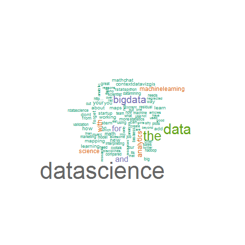

Word Cloud for Twitters
- Get most used words in 1000 Twitters for a specific Keyword
- Present the word cloud for the 1000 Twitters
- Manipulate the word cloud using sidebar. Link: Word Cloud for Twitters
Set a keyword in the textInput.
library(shiny)
textInput("selection", "Input a keyword, then hit 'Change' Button:", "dataScience")
Search through Twitter API first.
setup_twitter_oauth(api_key,api_secret,access_token,access_token_secret)
# Search the tweets using the keyword
tweets <- searchTwitter(keyword, 1000, lang="en")
Here is the process for getting Twitters for keyword dataScience
wordcloud_rep <- repeatable(wordcloud);v <- getTermMatrix("dataScience")
wordcloud_rep(names(v), v, scale=c(4,0.5), min.freq = 5, max.words=100, colors=brewer.pal(8, "Dark2"))

You can also change the Minimum Frequency of the word and Maximum Number of Words in word cloud using the sidebar
sliderInput("freq", "Minimum Frequency:", min = 1, max = 50, value = 5),
sliderInput("max", "Maximum Number of Words:", min = 1, max = 300, value = 50)